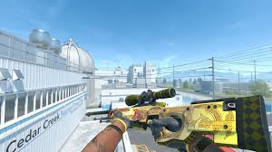
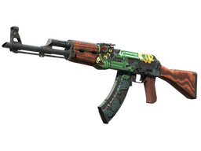
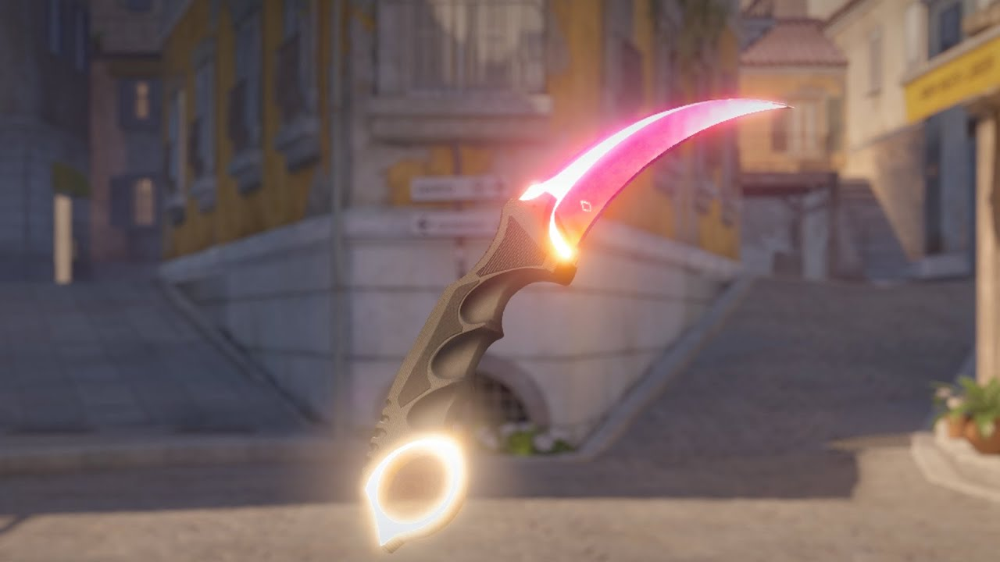

A Importância das Skins em CS2
As skins em Counter-Strike 2 não são apenas itens cosméticos; elas desempenham um papel significativo na economia do jogo e na experiência do jogador. As skins permitem que os jogadores personalizem suas armas, oferecendo uma forma de expressão e estilo dentro do jogo.
Além disso, as skins podem ter um impacto significativo no mercado, com algumas sendo vendidas por preços exorbitantes. A raridade e a popularidade de uma skin podem influenciar diretamente seu preço, tornando-as um investimento para muitos jogadores.
Exemplos de Skins Vendidas por Preços Altos
-
AWP | Dragon Lore - Esta skin icônica é uma das mais valiosas do jogo.
Preço: $60,000+
-
AK-47 | Fire Serpent - Uma das skins mais procuradas pelos jogadores.
Preço: $25,000+
-
Karambit | Fade - Uma faca que é muito valorizada pelos colecionadores.
Preço: $20,000+